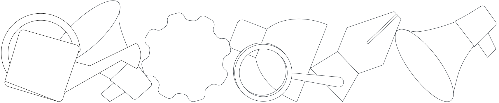

Исследование
Определение
Разработка
Реализация
Исследование
Определение
Разработка
Реализация
Энциклопедия
цифрового
продукта
Образовательный проект, который познакомит с инструментами, используемыми в проектировании цифровых продуктов

Изучите этапы
В этой энциклопедии процесс проектирования продукта разделен на 4 этапа: исследование, определение, разработка и реализация
Познакомьтесь
с задачами
Этот проект создан, чтобы познакомиться с задачами процесса проектирования цифрового продукта
Не сборник статей,
а учебник, который
помогает в поиске информации
Исследование
Об этапе
История цифровизации
Цифровой продукт
Процесс проектирования цифровых продуктов
MVP
Product Market Fit
Бизнес требования
Функциональные требования
Как генерировать идеи
Определение
Об этапе
Целевая аудитория
Анализ конкурентной среды
Количественные
и качественные методы опроса
Customer Development
SWOT
SMART
Юнит-экономика
Jobs to be done
CJM
Разработка
Об этапе
Roadmap
Lean Canvas
UserFlow
User Stories
Реализация
Об этапе
Что пользователь получает
Дополнительные материалы
Темплейты
Консультанты
Источники
О проекте
Контакты
Рассылка
Проект, который познакомит с разными инструментами, используемыми в разработке цифровых продуктов. Создан в рамках дипломной работы на программе «Дизайн и программирование»
в Школе дизайна НИУ ВШЭ.
Сделала студентка
Мила Калугина
под кураторством
Захара Дня
© 2023 ЭНЦИКЛОПЕДИЯ ЦИФРОВОГО ПРОДУКТА
Школа дизайна НИУ ВШЭ
Instagram
Telegram